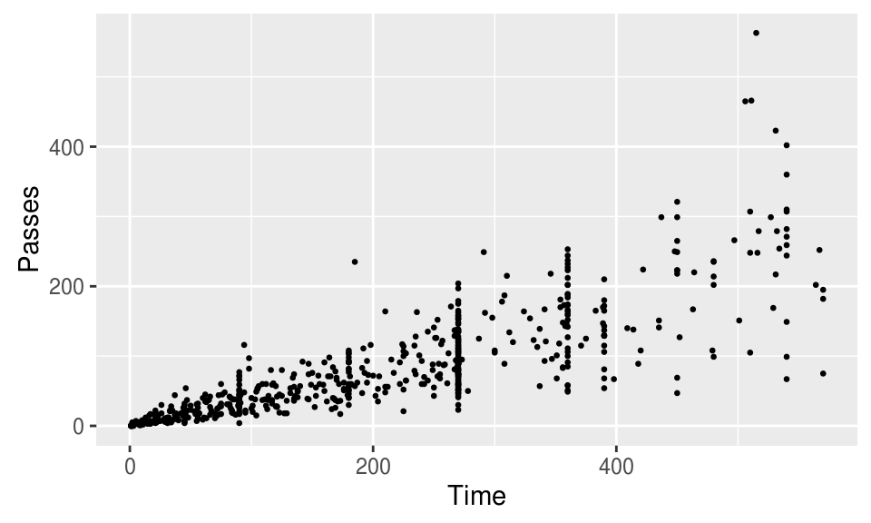
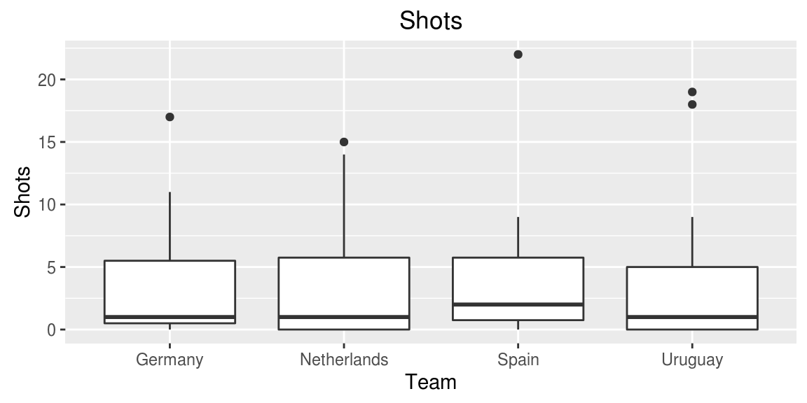
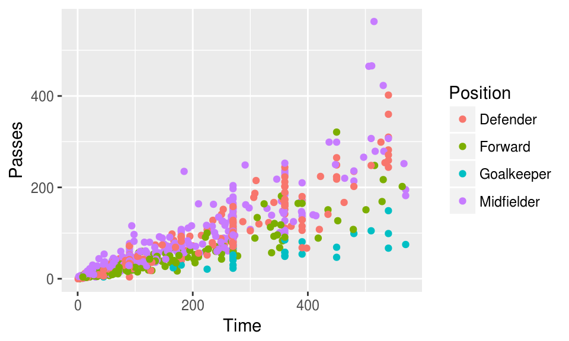
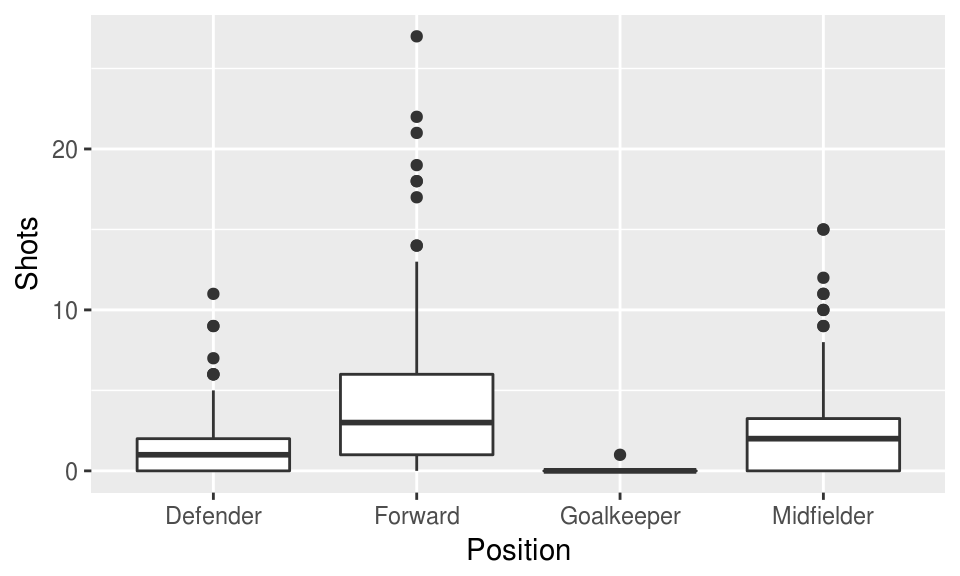
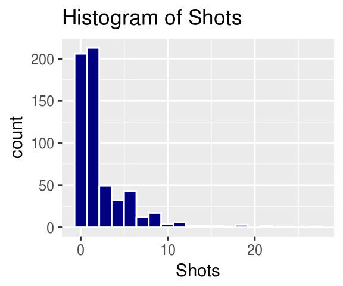
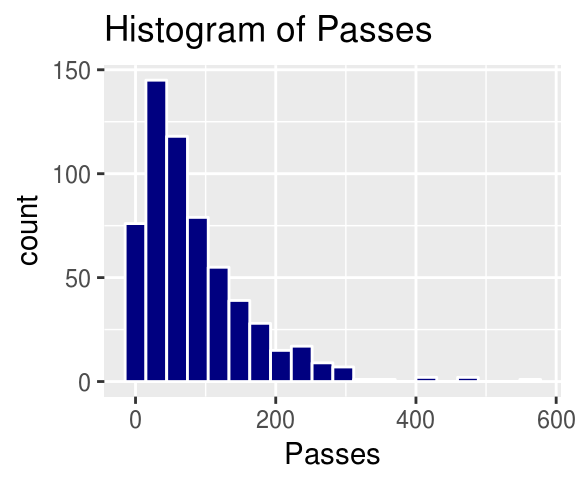
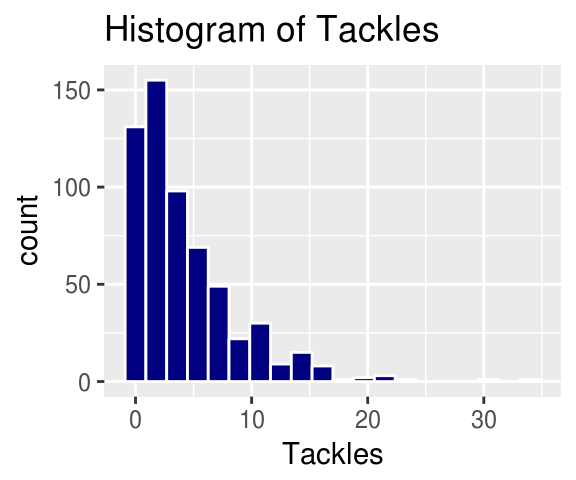
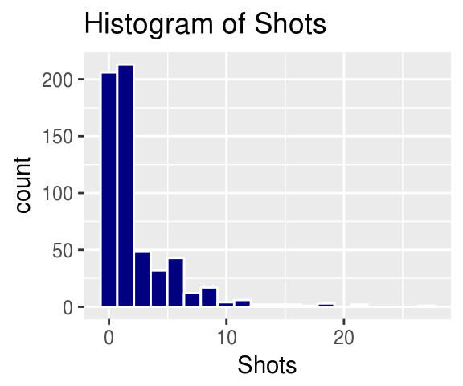
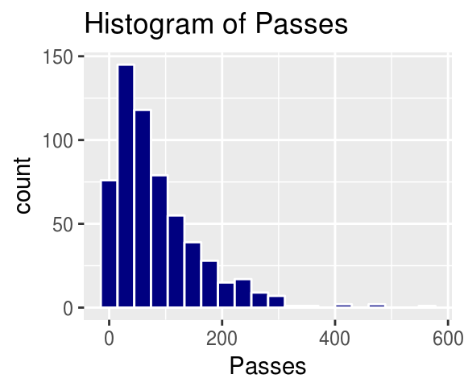
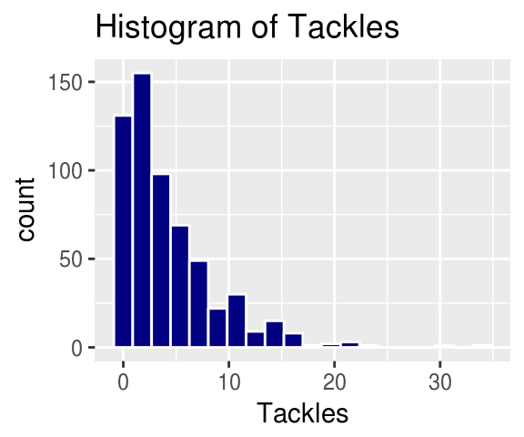

Chapter 3 Exploring data #1
Download a pdf of the lecture slides covering this topic.
3.1 Data from a package
So far we’ve covered three ways to get data into R:
- From flat files (either on your computer or online)
- From files like SAS and Excel
- From R objects (i.e., using
load())
Many R packages come with their own data, which is very easy to load and use. For example, the faraway package, which complements Julian Faraway’s book Linear Models with R (available as an ebook from the CSU library), has a dataset called worldcup that I’ll use for some examples and that you’ll use for part of this week’s in-course exercise. To load this dataset, first load the package with the data (faraway) and then use the data() function with the dataset name (“worldcup”) as the argument to the data function:
library(faraway)
data("worldcup")Unlike most data objects you’ll work with, datasets that are part of an R package will often have their own help files. You can access this help file for a dataset using the ? operator with the dataset’s name:
?worldcupThis helpful will usually include information about the size of the dataset, as well as definitions for each of the columns.
To get a list of all of the datasets that are available in the packages you currently have loaded, run data() without an option inside the parentheses:
data()
If you run the library function without any arguments (library()), it works in a similar way– R will open a list of all the R packages that you have installed on your computer and can open with a library call.
3.2 Plots to explore data
Exploratory data analysis is a key step in data analysis, and plotting your data in different ways is an important part of this process. In this section, I will focus on the basics of ggplot2 plotting, to get you started creating some plots to explore your data. This section will focus on making useful, rather than attractive graphs, since at this stage we are focusing on exploring data for yourself rather than presenting results to others. Next week, I will explain more about how you can customize ggplot objects, to help you make plots to communicate with others.
All of the plots we’ll make today will use the ggplot2 package (another member of the tidyverse!). If you don’t already have that installed, you’ll need to install it. You then need to load the package in your current session of R:
# install.packages("ggplot2") ## Uncomment and run if you don't have `ggplot2` installed
library(ggplot2)The process of creating a plot using ggplot2 follows conventions that are a bit different than most of the code you’ve seen so far in R (although it is somewhat similar to the idea of piping I introduced in the last chapter). The basic steps behind creating a plot with ggplot2 are:
- Create an object of the
ggplotclass, typically specifying the data and some or all of the aesthetics; - Add on geoms and other elements to create and customize the plot, using
+.
You can add on one or many geoms and other elements to create plots that range from very simple to very customized. This week, we’ll focus on simple geoms and added elements, and then explore more detailed customization next week.
If R gets to the end of a line and there is not some indication that the call is not over (e.g., %>% for piping or + for ggplot2 plots), R interprets that as a message to run the call without reading in further code. A common error when writing ggplot2 code is to put the + to add a geom or element at the beginning of a line rather than the end of a previous line– in this case, R will try to execute the call too soon. To avoid errors, be sure to end lines with +, don’t start lines with it.
3.2.1 Initializing a ggplot object
The first step in creating a plot using ggplot2 is to create a ggplot object. This object will not, by itself, create a plot with anything in it. Instead, it typically specifies the data frame you want to use and which aesthetics will be mapped to certain columns of that data frame (aesthetics are explained more in the next subsection).
Use the following conventions to initialize a ggplot object:
## Generic code
object <- ggplot(dataframe, aes(x = column_1, y = column_2))The data frame is the first parameter in a ggplot call and, if you like, you can use the parameter definition with that call (e.g., data = dataframe). Aesthetics are defined within an aes function call that typically is used within the ggplot call.
While the ggplot call is the place where you will most often see an aes call, aes can also be used within the calls to add specific geoms. This can be particularly useful if you want to map aesthetics differently for different geoms in your plot. We’ll see some examples of this use of aes more in later sections, when we talk about customizing plots. The data parameter can also be used in geom calls, to use a different data frame from the one defined when creating the original ggplot object, although this tends to be less common.
3.2.2 Plot aesthetics
Aesthetics are properties of the plot that can show certain elements of the data. For example, in Figure 3.1, color shows (is mapped to) gender, x-position shows height, and y-position shows weight in a sample data set of measurements of children in Nepal.
Figure 3.1: Example of how different properties of a plot can show different elements to the data. Here, color indicates gender, position along the x-axis shows height, and position along the y-axis shows weight. This example is a subset of data from the nepali dataset in the faraway package.
Any of these aesthetics could also be given a constant value, instead of being mapped to an element of the data. For example, all the points could be red, instead of showing gender.
Which aesthetics are required for a plot depend on which geoms (more on those in a second) you’re adding to the plot. You can find out the aesthetics you can use for a geom in the “Aesthetics” section of the geom’s help file (e.g., ?geom_point). Required aesthetics are in bold in this section of the help file and optional ones are not. Common plot aesthetics you might want to specify include:
| Code | Description |
|---|---|
x |
Position on x-axis |
y |
Position on y-axis |
shape |
Shape |
color |
Color of border of elements |
fill |
Color of inside of elements |
size |
Size |
alpha |
Transparency (1: opaque; 0: transparent) |
linetype |
Type of line (e.g., solid, dashed) |
3.2.3 Adding geoms
Next, you’ll want to add one or more geoms to create the plot. You can add these with + after the ggplot statement to initialize the ggplot object. Some of the most common geoms are:
| Plot type | ggplot2 function |
|---|---|
| Histogram (1 numeric variable) | geom_histogram |
| Scatterplot (2 numeric variables) | geom_point |
| Boxplot (1 numeric variable, possibly 1 factor variable) | geom_boxplot |
| Line graph (2 numeric variables) | geom_line |
3.2.4 Constant aesthetics
Instead of mapping an aesthetic to an element of your data, you can use a constant value for it. For example, you may want to make all the points green, rather than having color map to gender:

In this case, you’ll define that aesthetic when you add the geom, outside of an aes statement. In R, you can specify the shape of points with a number. Figure 3.2 shows the shapes that correspond to the numbers 1 to 25 in the shape aesthetic. This figure also provides an example of the difference between color (black for all these example points) and fill (red for these examples). You can see that some point shapes include a fill (21 for example), while some are either empty (1) or solid (19).
Figure 3.2: Examples of the shapes corresponding to different numeric choices for the shape aesthetic. For all examples, color is set to black and fill to red.
If you want to set color to be a constant value, you can do that in R using character strings for different colors. Figure 3.3 gives an example of some of the different blues available in R. To find links to listings of different R colors, google “R colors” and search by “Images”.
Figure 3.3: Example of available shades of blue in R.
3.2.5 Useful plot additions
There are also a number of elements that you can add onto a ggplot object using +. A few that are used very frequently are:
| Element | Description |
|---|---|
ggtitle |
Plot title |
xlab, ylab |
x- and y-axis labels |
xlim, ylim |
Limits of x- and y-axis |
3.2.6 Example dataset
For the example plots, I’ll use a dataset in the faraway package called nepali. This gives data from a study of the health of a group of Nepalese children.
library(faraway)
data(nepali)I’ll be using functions from dplyr and ggplot2, so those need to be loaded:
library(dplyr)
library(ggplot2)Each observation is a single measurement for a child; there can be multiple observations per child. I used the following code to select only the columns for child id, sex, weight, height, and age. I also used distinct to limit the dataset to only include one measurement for each chile, the child’s first measurement in the dataset.
nepali <- nepali %>%
select(id, sex, wt, ht, age) %>%
mutate(id = factor(id),
sex = factor(sex, levels = c(1, 2),
labels = c("Male", "Female"))) %>%
distinct(id, .keep_all = TRUE)After this cleaning, the data looks like this:
head(nepali)## id sex wt ht age
## 1 120011 Male 12.8 91.2 41
## 2 120012 Female 14.9 103.9 57
## 3 120021 Female 7.7 70.1 8
## 4 120022 Female 12.1 86.4 35
## 5 120023 Male 14.2 99.4 49
## 6 120031 Male 13.9 96.4 463.2.7 Histograms
Histograms show the distribution of a single variable. Therefore, geom_histogram() requires only one main aesthetic, x, the (numeric) vector for which you want to create a histogram. For example, to create a histogram of children’s heights for the Nepali dataset (Figure 3.4), run:
ggplot(nepali, aes(x = ht)) +
geom_histogram()
Figure 3.4: Basic example of plotting a histogram with ggplot2. This histogram shows the distribution of heights for the first recorded measurements of each child in the nepali dataset.
If you run the code with no arguments for binwidth or bins in geom_histogram, you will get a message saying “stat_bin() using bins = 30. Pick better value with binwidth.”. This message is just saying that a default number of bins was used to create the histogram. You can use arguments to change the number of bins used, but often this default is fine. You may also get a message that observations with missing values were removed.
You can add some elements to the histogram now to customize it a bit. For example (Figure @ref()), you can add a figure title (ggtitle) and clearer labels for the x-axis (xlab). You can also change the range of values shown by the x-axis (xlim).
ggplot(nepali, aes(x = ht)) +
geom_histogram(fill = "lightblue", color = "black") +
ggtitle("Height of children") +
xlab("Height (cm)") + xlim(c(0, 120))Figure 3.5: Example of adding ggplot elements to customize a histogram.
The geom geom_histogram also has special argument for setting the number of width of the bins used in the histogram. Figure ?? shows an example of how you can use the bins argument to change the number of bins that are used to make the histogram of height for the nepali dataset.
ggplot(nepali, aes(x = ht)) +
geom_histogram(fill = "lightblue", color = "black",
bins = 40)
Figure 3.6: Example of using the bins argument to change the number of bins used in a histogram.
Similarly, the binwidth argument can be used to set the width of bins. Figure 3.7 shows an example of using this function to create a histogram of the Nepali children’s heights with binwidths of 10 centimeters (note that this argument is set in the same units as the x variable).
ggplot(nepali, aes(x = ht)) +
geom_histogram(fill = "lightblue", color = "black",
binwidth = 10)
Figure 3.7: Example of using the binwidth argument to set the width of each bin used in a histogram.
3.2.8 Scatterplots
A scatterplot shows how one variable changes as another changes. You can use the geom_point geom to create a scatterplot. For example, to create a scatterplot of height versus age for the Nepali data (Figure 3.8), you can run the following code:
ggplot(nepali, aes(x = ht, y = wt)) +
geom_point()Figure 3.8: Example of creating a scatterplot. This scatterplot shows the relationship between children’s heights and weights within the nepali dataset.
Again, you can use some of the options and additions to change the plot appearance. For example, to add a title, change the x- and y-axis labels, and change the color and size of the points on the scatterplot (Figure 3.9), you can run:
ggplot(nepali, aes(x = ht, y = wt)) +
geom_point(color = "blue", size = 0.5) +
ggtitle("Weight versus Height") +
xlab("Height (cm)") + ylab("Weight (kg)")Figure 3.9: Example of adding ggplot elements to customize a scatterplot.
You can also try mapping another variable in the dataset to the color aesthetic. For example, to use color to show the sex of each child in the scatterplot (Figure 3.10), you can run:
ggplot(nepali, aes(x = ht, y = wt, color = sex)) +
geom_point(size = 0.5) +
ggtitle("Weight versus Height") +
xlab("Height (cm)") + ylab("Weight (kg)")Figure 3.10: Example of mapping color to an element of the data in a scatterplot.
3.2.9 Boxplots
Boxplots can be used to show the distribution of a continuous variable. To create a boxplot, you can use the geom_boxplot geom. To plot a boxplot for a single, continuous variable, you can map that variable to y in the aes call, and map x to the constant 1. For example, to create a boxplot of the heights of children in the Nepali dataset (Figure 3.11), you can run:
ggplot(nepali, aes(x = 1, y = ht)) +
geom_boxplot() +
xlab("")+ ylab("Height (cm)")Figure 3.11: Example of creating a boxplot. The example shows the distribution of height data for children in the nepali dataset.
You can also create separate boxplots, one for each level of a factor (Figure 3.12). In this case, you’ll need to include two aesthetics (x and y) when you initialize the ggplot object The y variable is the variable for which the distribution will be shown, and the x variable should be a discrete (categorical or TRUE/FALSE) variable, and will be used to group the variable. This x variable should also be specified as the grouping variable, using group within the aesthetic call.
ggplot(nepali, aes(x = sex, y = ht, group = sex)) +
geom_boxplot() +
xlab("Sex")+ ylab("Height (cm)") Figure 3.12: Example of creating separate boxplots, divided by a categorical grouping variable in the data.
3.2.10 Extensions of ggplot2
There are lots of R extensions for creating other interesting plots. For example, you can use the ggpairs function from the GGally package to plot all pairs of scatterplots for several variables (Figure 3.13).
library(GGally)
ggpairs(nepali %>% select(sex, wt, ht, age))
Figure 3.13: Example of using ggpairs from the GGally package for exploratory data analysis.
Notice how this output shows continuous and binary variables differently. For example, the center diagonal shows density plots for continuous variables, but a bar chart for the categorical variable.
See https://www.ggplot2-exts.org to find more ggplot2 extensions.
3.3 Simple statistics functions
3.3.1 Summary statistics
To explore your data, you’ll need to be able to calculate some simple statistics for vectors, including calculating the mean and range of continuous variables and counting the number of values in each category of a factor or logical vector.
Here are some simple statistics functions you will likely use often:
| Function | Description |
|---|---|
range() |
Range (minimum and maximum) of vector |
min(), max() |
Minimum or maximum of vector |
mean(), median() |
Mean or median of vector |
sd() |
Standard deviation of vector |
table() |
Number of observations per level for a factor vector |
cor() |
Determine correlation(s) between two or more vectors |
summary() |
Summary statistics, depends on class |
All of these functions take, as the main argument, the vector or vectors for which you want the statistic. If there are missing values in the vector, you’ll typically need to add an argument to say what to do with the missing values. The parameter name for this varies by function, but for many of these functions it’s na.rm = TRUE or use="complete.obs".
mean(nepali$wt, na.rm = TRUE)## [1] 10.18432range(nepali$ht, na.rm = TRUE)## [1] 52.4 104.1sd(nepali$ht, na.rm = TRUE)## [1] 12.64529table(nepali$sex)##
## Male Female
## 107 93Most of these functions take a single vector as the input. The cor function, however, calculates the correlation between vectors and so takes two or more vectors. If you give it multiple values, it will give the correlation matrix for all the vectors.
cor(nepali$wt, nepali$ht, use = "complete.obs")## [1] 0.9571535cor((nepali %>% select(wt, ht, age)), use = "complete.obs")## wt ht age
## wt 1.0000000 0.9571535 0.8931195
## ht 0.9571535 1.0000000 0.9287129
## age 0.8931195 0.9287129 1.0000000R supports object-oriented programming. Your first taste of this shows up with the summary function. For the summary function, R does not run the same code every time. Instead, R first checks what type of object was input to summary, and then it runs a function (method) specific to that type of object. For example, if you input a continuous vector, like the ht column in nepali, to summary, the function will return the mean, median, range, and 25th and 75th percentile values:
summary(nepali$wt)## Min. 1st Qu. Median Mean 3rd Qu. Max. NA's
## 3.80 7.90 10.10 10.18 12.40 16.70 15However, if you submit a factor vector, like the sex column in nepali, the summary function will return a count of how many elements of the vector are in each factor level (as a note, you could do the same thing with the table function):
summary(nepali$sex)## Male Female
## 107 93The summary function can also input other data structures, including dataframes, lists, and special object types, like regression model objects. In each case, it performs different actions specific to the object type. Later in this section, we’ll cover regression models, and see what the summary function returns when it is used with regression model objects.
3.3.2 summarize function
You will often want to use these functions in conjunction with the summarize function in dplyr. For example, to create a new dataframe with the mean weight of children in the nepali dataset, you can use mean inside a summarize function:
nepali %>%
summarize(mean_wt = mean(wt, na.rm = TRUE))## mean_wt
## 1 10.18432There are also some special functions that you can use with summarize. For example, the n function will calculate the number of observations and the first function will return the first value of a column:
nepali %>%
summarize(n_children =n(),
first_id = first(id))## n_children first_id
## 1 200 120011See the “summary function” section of the the RStudio Data Wrangling cheatsheet for more examples of these special functions.
Often, you will be more interested in summaries within certain groupings of your data, rather than overall summaries. For example, you may be interested in mean height and weight by sex, rather than across all children, for the nepali data. It is very easy to calculate these grouped summaries using dplyr– you just need to group data using the group_by function (also a dplyr function) before you run the summarize function:
nepali %>%
group_by(sex) %>%
summarize(mean_wt = mean(wt, na.rm = TRUE),
n_children =n(),
first_id = first(id))## # A tibble: 2 × 4
## sex mean_wt n_children first_id
## <fctr> <dbl> <int> <fctr>
## 1 Male 10.497980 107 120011
## 2 Female 9.823256 93 120012Don’t forget that you need to save the output to a new object if you want to use it later. The above code, which creates a dataframe with summaries for Nepali children by sex, will only be printed out to your console if run as-is. If you’d like to save this output as an object to use later (for example, for a plot or table), you need to assign it to an R object.
3.4 Logical vectors
Last week, you learned a lot about logical statements and how to use them with the filter function. You can also use logical vectors, created with these logical statements, for a lot of other things. For example, you can use them directly in the square bracket indexing ([..., ...]) to pull out just the rows of a dataframe that meet a certain condition.
When you run a logical statement on a vector, you create a logical vector the same length as the original vector:
is_male <- nepali$sex == "Male"
length(nepali$sex)## [1] 200length(is_male)## [1] 200The logical vector (is_male in this example) will have the value TRUE at any position where the original vector (nepali$sex in this example) met the logical condition you tested, and FALSE anywhere else:
head(nepali$sex)## [1] Male Female Female Female Male Male
## Levels: Male Femalehead(is_male)## [1] TRUE FALSE FALSE FALSE TRUE TRUEYou can “flip” this logical vector (i.e., change every TRUE to FALSE and vice-versa) using the bang operator, !:
head(is_male)## [1] TRUE FALSE FALSE FALSE TRUE TRUEhead(!is_male)## [1] FALSE TRUE TRUE TRUE FALSE FALSEThe bang operator turns out to be very useful. You will often find cases where it’s difficult to write a logical vector to get what you want, but fairly easy to write the inverse (find everything you don’t want). One example is filtering down to non-missing values– the is.na function will return TRUE for any value that is NA, so you can use !is.na() to identify any non-missing values.
You can do a few cool things with a logical vector. For example, you can use it with indexing to pull out just the rows of a dataframe where is_male is TRUE:
head(nepali[is_male, ])## id sex wt ht age
## 1 120011 Male 12.8 91.2 41
## 5 120023 Male 14.2 99.4 49
## 6 120031 Male 13.9 96.4 46
## 7 120051 Male 8.3 69.5 8
## 9 120053 Male 15.8 96.0 54
## 11 120062 Male 12.1 89.9 57Or, with !, just the rows where is_male is FALSE:
head(nepali[!is_male, ])## id sex wt ht age
## 2 120012 Female 14.9 103.9 57
## 3 120021 Female 7.7 70.1 8
## 4 120022 Female 12.1 86.4 35
## 8 120052 Female 11.8 83.6 32
## 10 120061 Female 8.7 78.5 26
## 15 120082 Female 11.2 79.8 36For these cases, the length of the logical vector and the number of rows in the dataframe will match.
You can also use sum() and table() with a logical vector to find out how many of the values in the vector are TRUE AND FALSE. In the example, you can use these functions to find out how many males and females are in the dataset:
sum(is_male)## [1] 107sum(!is_male)## [1] 93table(is_male)## is_male
## FALSE TRUE
## 93 107Note that you could also achieve the same thing with dplyr functions. For example, you could use mutate with a logical statement to create an is_male column in the nepali dataframe, then group by the new is_male column and summarize, using the n function to count the number of observations in each group:
nepali %>%
mutate(is_male = sex == "Male") %>%
group_by(is_male) %>%
summarize(n_children = n())## # A tibble: 2 × 2
## is_male n_children
## <lgl> <int>
## 1 FALSE 93
## 2 TRUE 1073.5 Regression models
3.5.1 Formula structure
Regression models can be used to estimate how the expected value of a dependent variable changes as independent variables change.
In R, regression formulas take this structure:
## Generic code
[response variable] ~ [indep. var. 1] + [indep. var. 2] + ...Notice that a tilde, ~, is used to separate the independent and dependent variables and that a plus sign, +, is used to join independent variables. This format mimics the statistical notation:
\[ Y_i \sim X_1 + X_2 + X_3 \]
You will use this type of structure in R fo a lot of different function calls, including those for linear models (fit with the lm function) and generalized linear models (fit with the glm function).
There are some conventions that can be used in R formulas. Common ones include:
| Convention | Meaning |
|---|---|
I() |
evaluate the formula inside I() before fitting (e.g., I(x1 + x2)) |
: |
fit the interaction between x1 and x2 variables |
* |
fit the main effects and interaction for both variables (e.g., x1*x2 equals x1 + x2 + x1:x2) |
. |
include as independent variables all variables other than the response (e.g., y ~ .) |
1 |
intercept (e.g., y ~ 1 for an intercept-only model) |
- |
do not include a variable in the dataframe as an independent variables (e.g., y ~ . - x1); usually used in conjunction with . or 1 |
3.5.2 Linear models
To fit a linear model, you can use the function lm(). This function is part of the stats package, which comes installed with base R. In this function, you can use the data option to specify the dataframe from which to get the vectors.
mod_a <- lm(wt ~ ht, data = nepali)This previous call fits the model:
\[ Y_{i} = \beta_{0} + \beta_{1}X_{1,i} + \epsilon_{i} \]
where:
- \(Y_{i}\) : weight of child \(i\)
- \(X_{1,i}\) : height of child \(i\)
If you run the lm function without saving it as an object, R will fit the regression and print out the function call and the estimated model coefficients:
lm(wt ~ ht, data = nepali)##
## Call:
## lm(formula = wt ~ ht, data = nepali)
##
## Coefficients:
## (Intercept) ht
## -8.6948 0.2351However, to be able to use the model later for things like predictions and model assessments, you should save the output of the function as an R object:
mod_a <- lm(wt ~ ht, data = nepali)This object has a special class, lm:
class(mod_a)## [1] "lm"This class is a special type of list object. If you use is.list to check, you can confirm that this object is a list:
is.list(mod_a)## [1] TRUEThere are a number of functions that you can apply to an lm object. These include:
| Function | Description |
|---|---|
summary |
Get a variety of information on the model, including coefficients and p-values for the coefficients |
coefficients |
Pull out just the coefficients for a model |
fitted |
Get the fitted values from the model (for the data used to fit the model) |
plot |
Create plots to help assess model assumptions |
residuals |
Get the model residuals |
For example, you can get the coefficients from the model by running:
coefficients(mod_a)## (Intercept) ht
## -8.694768 0.235050The estimated coefficient for the intercept is always given under the name “(Intercept)”. Estimated coefficients for independent variables are given based on their column names in the original data (“ht” here, for \(\beta_1\), or the estimated increase in expected weight for a one unit increase in height).
You can use the output from a coefficients call to plot a regression line based on the model fit on top of points showing the original data (Figure 3.14).
mod_coef <- coefficients(mod_a)
ggplot(nepali, aes(x = ht, y = wt)) +
geom_point(size = 0.2) +
xlab("Height (cm)") + ylab("Weight (kg)") +
geom_abline(aes(intercept = mod_coef[1],
slope = mod_coef[2]), col = "blue")Figure 3.14: Example of using the output from a coefficients call to add a regression line to a scatterplot.
You can also add a linear regression line to a scatterplot by adding the geom geom_smooth using the argument method = “lm”.
You can use the function residuals on an lm object to pull out the residuals from the model fit:
head(residuals(mod_a))## 1 2 3 4 5 6
## 0.05820415 -0.82693141 -0.08223993 0.48644436 -0.46920621 -0.06405608The result of a residuals call is a vector with one element for each of the non-missing observations (rows) in the dataframe you used to fit the model. Each value gives the different between the model fitted value and the observed value for each of these observations, in the same order the observations show up in the dataframe. The residuals are in the same order as the observations in the original dataframe.
You can also use the shorter function coef as an alternative to coefficients and the shorter function resid as an alternative to residuals.
As noted in the subsection on simple statistics functions, the summary function returns different output depending on the type of object that is input to the function. If you input a regression model object to summary, the function gives you a lot of information about the model. For example, here is the output returned by running summary for the linear regression model object we just created:
summary(mod_a)##
## Call:
## lm(formula = wt ~ ht, data = nepali)
##
## Residuals:
## Min 1Q Median 3Q Max
## -2.44736 -0.55708 0.01925 0.49941 2.73594
##
## Coefficients:
## Estimate Std. Error t value Pr(>|t|)
## (Intercept) -8.694768 0.427398 -20.34 <2e-16 ***
## ht 0.235050 0.005257 44.71 <2e-16 ***
## ---
## Signif. codes: 0 '***' 0.001 '**' 0.01 '*' 0.05 '.' 0.1 ' ' 1
##
## Residual standard error: 0.9017 on 183 degrees of freedom
## (15 observations deleted due to missingness)
## Multiple R-squared: 0.9161, Adjusted R-squared: 0.9157
## F-statistic: 1999 on 1 and 183 DF, p-value: < 2.2e-16This output includes a lot of useful elements, including (1) basic summary statistics for the residuals (to meet model assumptions, the median should be around zero and the absolute values fairly similar for the first and third quantiles), (2) coefficient estimates, standard errors, and p-values, and (3) some model summary statistics, including residual standard error, degrees of freedom, number of missing observations, and F-statistic.
The object returned by the summary() function when it is applied to an lm object is a list, which you can confirm using the is.list function:
is.list(summary(mod_a))## [1] TRUEWith any list, you can use the names function to get the names of all of the different elements of the object:
names(summary(mod_a))## [1] "call" "terms" "residuals" "coefficients"
## [5] "aliased" "sigma" "df" "r.squared"
## [9] "adj.r.squared" "fstatistic" "cov.unscaled" "na.action"You can use the $ operator to pull out any element of the list. For example, to pull out the table with information on the estimated model coefficients, you can run:
summary(mod_a)$coefficients## Estimate Std. Error t value Pr(>|t|)
## (Intercept) -8.694768 0.427397843 -20.34350 7.424640e-49
## ht 0.235050 0.005256822 44.71334 1.962647e-100The plot function, like the summary function, will give different output depending on the class of the object that you input. For an lm object, you can use the plot function to get a number of useful diagnostic plots that will help you check regression assumptions (Figure 3.15):
plot(mod_a)Figure 3.15: Example output from running the plot function with an lm object as the input.
You can also use binary variables or factors as independent variables in regression models. For example, in the nepali dataset, sex is a factor variable with the levels “Male” and “Female”. You can fit a linear model of weight regressed on sex for this data with the call:
mod_b <- lm(wt ~ sex, data = nepali)This call fits the model:
\[ Y_{i} = \beta_{0} + \beta_{1}X_{1,i} + \epsilon_{i} \]
where \(X_{1,i}\) : sex of child \(i\), where 0 = male and 1 = female.
Here are the estimated coefficients from fitting this model:
summary(mod_b)$coefficients## Estimate Std. Error t value Pr(>|t|)
## (Intercept) 10.497980 0.3110957 33.745177 1.704550e-80
## sexFemale -0.674724 0.4562792 -1.478752 1.409257e-01You’ll notice that, in addition to an estimated intercept ((Intercept)), the other estimated coefficient is sexFemale rather than just sex, although the column name in the dataframe input to lm for this variable is sex.
This is because, when a factor or binary variable is input as an independent variable in a linear regression model, R will fit an estimated coefficient for all levels of factors except the first factor level. By default, this first factor level is used as the baseline level, and so its estimated mean is given by the estimated intercept, while the other model coefficients give the estimated difference from this baseline.
For example, the model fit above tells us that the estimated mean weight of males is 10.5, while the estimated mean weight of females is 10.5 + -0.7 = 9.8.
If you would prefer that a different level of the factor be the baseline (for example, “Female” rather than “Male” for the previous regression), you can do that by using the levels argument in the factor function to reset factor levels. For example:
nepali_reset <- nepali %>%
mutate(sex = factor(sex, levels = c("Female", "Male")))
mod_b_reset <- lm(wt ~ sex, data = nepali_reset)
summary(mod_b_reset)$coef## Estimate Std. Error t value Pr(>|t|)
## (Intercept) 9.823256 0.3337816 29.430189 2.626719e-71
## sexMale 0.674724 0.4562792 1.478752 1.409257e-01Now, (Intercept) gives the estimated mean weight for females, while the second estimated coefficient gives the estimated mean difference for males compared to the expected value for females.
3.5.3 Generalized linear models (GLMs)
You can fit a variety of models, including linear models, logistic models, and Poisson models, using generalized linear models (GLMs).
For linear models, the only difference between lm and glm are the mechanics of how they estimate the model coefficients (lm uses least squares while glm uses maximum likelihood). You will (almost always) get exactly the same estimated coefficients regardless of whether you use glm or lm to fit a linear regression.
For example, here is the code to fit a linear regression model for weight regressed on height from the nepali dataset:
mod_c <- glm(wt ~ ht, data = nepali)This call fits the same regression model I fit earlier with the lm function and saved as mod_a. You can see that the two methods give exactly the same coefficient estimates:
coef(mod_c)## (Intercept) ht
## -8.694768 0.235050coef(mod_a)## (Intercept) ht
## -8.694768 0.235050Unlike the lm function, however, the glm function also allows you to fit other model types, including logistic and Poisson models. You can specify the model type using the family argument to the glm call:
| Model type | family argument |
|---|---|
| Linear | family = gaussian(link = 'identity') |
| Logistic | family = binomial(link = 'logit') |
| Poisson | family = poisson(link = 'log') |
For example, say we wanted to fit a logistic regression for the nepali data of whether the probability of a child weighing more than 13 kg is associated with the child’s sex.
First, create a binary variable in the nepali dataset, wt_over_13, that is TRUE if a child weighed more than 13 kilograms and FALSE otherwise. You can use the mutate function from dplyr to add this new column (which, as a note, is a logical vector):
nepali <- nepali %>%
mutate(wt_over_13 = wt > 13)
head(nepali)## id sex wt ht age wt_over_13
## 1 120011 Male 12.8 91.2 41 FALSE
## 2 120012 Female 14.9 103.9 57 TRUE
## 3 120021 Female 7.7 70.1 8 FALSE
## 4 120022 Female 12.1 86.4 35 FALSE
## 5 120023 Male 14.2 99.4 49 TRUE
## 6 120031 Male 13.9 96.4 46 TRUENow you can fit a logistic regression of wt_over_13 regressed on sex, using a logistic model:
mod_d <- glm(wt_over_13 ~ sex, data = nepali,
family = binomial(link = "logit"))Elements of a GLM can be pulled out in the same way that we looked at elements from the linear model fit with lm. For example, to see a table of estimated model coefficients, you can run:
summary(mod_d)$coef## Estimate Std. Error z value Pr(>|z|)
## (Intercept) -1.3121864 0.2458445 -5.337465 9.425485e-08
## sexFemale -0.4133237 0.3886659 -1.063442 2.875815e-01Because this model was a logistic model, fit with a log link, here the model coefficient estimate for sexFemale gives an estimate of the log odds of weight higher than 13 kg associated with females versus males. The p-value for this estimate (Pr(>|z|) = 0.29) isn’t very small, suggesting that the difference between male and female children in the odds of weighing more than 13 kg is not statistically significant.
3.5.4 References– statistics in R
One great (and free online for CSU students through our library) book to find out more about using R for basic statistics is:
If you want all the details about fitting linear models and GLMs in R, Julian Faraway’s books are fantastic. He has one on linear models and one on extensions including logistic and Poisson models:
- Linear Models with R (also free online through the CSU library)
- Extending the Linear Model with R
3.6 In-course exercise
3.6.1 Loading data from an R package
The data we’ll be using today is from a dataset called worldcup in the package faraway. Load that data so you can use it on your computer (note: you will need to load and install the faraway package to do this). Use the help file for the data to find out more about the dataset. Use some basic functions, like head, tail, colnames, str, and summary to check out the data a bit. See if you can figure out:
- What variables are included in this dataset? (Check the column names.)
- What class is each column currently? In particular, which are numbers and which are factors?
3.6.1.1 Example R code:
Load the faraway package using load() and then load the data using data():
## Uncomment the next line if you need to install the package
# install.packages("faraway")
library(faraway)
data("worldcup")Check out the help file for the worldcup dataset to find out more about the data. (Note: Only datasets that are parts of packages will have help files.)
?worldcupCheck out the data a bit:
str(worldcup)## 'data.frame': 595 obs. of 7 variables:
## $ Team : Factor w/ 32 levels "Algeria","Argentina",..: 1 16 9 9 5 32 11 11 18 20 ...
## $ Position: Factor w/ 4 levels "Defender","Forward",..: 4 4 1 4 2 2 1 2 4 1 ...
## $ Time : int 16 351 180 270 46 72 138 33 21 103 ...
## $ Shots : int 0 0 0 1 2 0 0 0 5 0 ...
## $ Passes : int 6 101 91 111 16 15 51 9 22 38 ...
## $ Tackles : int 0 14 6 5 0 0 2 0 0 1 ...
## $ Saves : int 0 0 0 0 0 0 0 0 0 0 ...head(worldcup)## Team Position Time Shots Passes Tackles Saves
## Abdoun Algeria Midfielder 16 0 6 0 0
## Abe Japan Midfielder 351 0 101 14 0
## Abidal France Defender 180 0 91 6 0
## Abou Diaby France Midfielder 270 1 111 5 0
## Aboubakar Cameroon Forward 46 2 16 0 0
## Abreu Uruguay Forward 72 0 15 0 0tail(worldcup)## Team Position Time Shots Passes Tackles Saves
## van Bommel Netherlands Midfielder 540 2 307 31 0
## van Bronckhorst Netherlands Defender 540 1 271 10 0
## van Persie Netherlands Forward 479 14 108 1 0
## von Bergen Switzerland Defender 234 0 79 3 0
## Alvaro Pereira Uruguay Midfielder 409 6 140 17 0
## Ozil Germany Midfielder 497 7 266 3 0colnames(worldcup)## [1] "Team" "Position" "Time" "Shots" "Passes" "Tackles"
## [7] "Saves"summary(worldcup)## Team Position Time Shots
## Slovakia : 21 Defender :188 Min. : 1.0 Min. : 0.000
## Uruguay : 21 Forward :143 1st Qu.: 88.0 1st Qu.: 0.000
## Argentina: 20 Goalkeeper: 36 Median :191.0 Median : 1.000
## Cameroon : 20 Midfielder:228 Mean :208.9 Mean : 2.304
## Chile : 20 3rd Qu.:270.0 3rd Qu.: 3.000
## Paraguay : 20 Max. :570.0 Max. :27.000
## (Other) :473
## Passes Tackles Saves
## Min. : 0.00 Min. : 0.000 Min. : 0.0000
## 1st Qu.: 29.00 1st Qu.: 1.000 1st Qu.: 0.0000
## Median : 61.00 Median : 3.000 Median : 0.0000
## Mean : 84.52 Mean : 4.192 Mean : 0.6672
## 3rd Qu.:115.50 3rd Qu.: 6.000 3rd Qu.: 0.0000
## Max. :563.00 Max. :34.000 Max. :20.0000
## 3.6.2 Basic plots of the data
Use some basic plots to check out this data. Try the following:
- Plot histograms of all the numeric variables (
Time,Shot,Passes,Tackles,Saves) - Plot scatterplots of different combinations of numeric variables (e.g.,
Timevs.Shots). Try doing this using thegeom_point()geom fromggplot2. Also try doing it using theggpairs()function from theGGallypackage, to plot several of these at the same time. Try using different constant or mapped values with thecoloraesthetic. - Create boxplots of
Time,Shots,PassesandSavesby position. - Go online and find out which teams were the top four teams in this World Cup (i.e., first through fourth places). Create a
top_teamssubset with just these teams. Plot boxplots ofShotsandSavesby team for just these teams. - Did you notice any interesting features of the data when you did any of the graphs in this section?
3.6.2.1 Example R code:
Use histograms to explore the distribution of different variables. If you want to change the number of bins in the histogram, try playing around with the bins and binwidth arguments. You can use the bins argument to say how many bins you want (e.g., bins = 50). You can use the binwidth argument to say how wide you want the bins to be (e.g., binwidth = 10 if you wanted bins to be 10 units wide, in the units of the variable mapped to the x aesthetic. Try using fill and color to change the appearance of the plot. Google “R colors” and search the images to find links to listings of different R colors.
library(ggplot2)
ggplot(worldcup, aes(x = Time)) +
geom_histogram()
ggplot(worldcup, aes(x = Time)) +
geom_histogram(bins = 50)
ggplot(worldcup, aes(x = Time)) +
geom_histogram(binwidth = 100)
ggplot(worldcup, aes(x = Time)) +
geom_histogram(binwidth = 50, color = "white", fill = "cyan4")
Create a scatterplot of Time versus Passes. To change the size of the points, use the size argument (use a number lower than 1 for smaller points, higher than 1 for larger points). Try changing the color and transparency of the points using the aesthetics color and alpha. Try using color to show each player’s position by mapping Position to the color aesthetic.
ggplot(worldcup, aes(x = Time, y = Passes)) +
geom_point()
ggplot(worldcup, aes(x = Time, y = Passes)) +
geom_point(size = 0.5)
ggplot(worldcup, aes(x = Time, y = Passes)) +
geom_point(size = 2, color = "blue", alpha = 0.25)
ggplot(worldcup, aes(x = Time, y = Passes, color = Position)) +
geom_point()
Use the ggpairs function from the GGally package to plot scatterplots of all combinations of several numeric variables.
library(GGally)
library(dplyr)
ggpairs(select(worldcup, Time, Shots, Passes, Tackles, Saves))
To create a boxplot of Shots by Position, you can use geom_boxplot:
ggplot(worldcup, aes(x = Position, y = Shots)) +
geom_boxplot()
The top four teams in this World Cup were Spain, the Netherlands, Germany, and Uruguay. Create a subset with just the data for these four teams:
top_teams <- worldcup %>%
filter(Team %in% c("Spain", "Netherlands", "Germany", "Uruguay")) %>%
mutate(Team = factor(Team))This dataset will still have all the levels saved for the Team factor, even though it isn’t using them all. You can re-set this by resetting Team as a factor, which is what I’ve done with the mutate line. When R creates a factor from a vector, its default is to only use as levels the values that show up in the vector.
Now, you can plot the boxplots, mapping Team to the x aesthetic and Shots or Saves to the y aesthetic:
ggplot(top_teams, aes(x = Team, y = Shots)) +
geom_boxplot() +
ggtitle("Shots")
ggplot(top_teams, aes(x = Team, y = Saves)) +
geom_boxplot() +
ggtitle("Saves")
3.6.2.2 If you have extra time:
If you wanted to do the same plot for several different variables, you could loop through your code (we’ll be covering more about loops in a few weeks). For example, you could create histograms for all of the numeric variables (if you do this in RStudio, you’ll need to use the arrows on the plot window to move through and see all the different plots once you’ve created them):
## Create an object with the column names for all of the numeric variables
my_vars <- colnames(worldcup)[3:7]
## Loop through all of those variables. Print out a histogram with the
## variable, and have it print on the plot, as the main title, the
## column name for that variable
for(var in my_vars){
worldcup$to_plot <- worldcup[ , var]
a <- ggplot(worldcup, aes(x = to_plot)) +
geom_histogram(bins = 20, color = "white", fill = "navy") +
xlab(var) +
ggtitle(paste("Histogram of", var))
plot(a)
} 

A few things to note in this example:
- To map an element of the data to an aesthetic, it’s easiest if that element is saved in a column in the dataframe. Within this loop, I’m making an extra column called
to_plot, where I’m copying the column of the variable I want to plot each time the loop runs. That way, I can always usex = to_plotin the aesthetic mapping for the ggplot object. - If you run code to create a ggplot object within a loop, it won’t automatically print. Instead, you need to use
printto get the object to print out. One way to do that is to save the final ggplot object as an R object (here I’m saving it toa) and then use theprintfunction to print that object. - Next week, we’ll talk some about faceting, which can create multiple plots by variable like this in a lot less code. However, it’s useful at this point to start thinking about how to extend code to use in loops, to save yourself time when you need to repeat something similar many times.
3.6.3 Exploring the data using simple statistics and logical statements
Next, try checking out the data using some basic commands for simple statistics, like mean(), range(), max(), and min(). Use these, along with some logical statements, to help you answer the following questions:
- What is the range of time that players spent in the game? Who played the most World Cup time in this World Cup? For the minimum of the range of
Time, how many players played this amount of time? - What is the mean number of saves that players made? What is the mean number of saves just among the goalkeepers? How many of the players are goalkeepers? Did any non-goalkeeper make a save?
3.6.3.1 Example R code:
Use range() to find out the range of time these players played in the World Cup.
range(worldcup$Time)## [1] 1 570To figure out who played the most time, you need to subset out the rows of the dataset where the Time variable equals the maximum of the Time variable for the whole dataset. There are a few ways to do that. Here I’m showing two: (1) using logic within the “square-bracket indexing”, to pull out just rows where it is TRUE that the Time for that row equals max(worldcup$Time) and (2) using filter from the dplyr package to filter down to rows where where it is TRUE that the Time for that row equals max(Time) for the whole dataset.
max(worldcup$Time)## [1] 570head(worldcup$Time == max(worldcup$Time))## [1] FALSE FALSE FALSE FALSE FALSE FALSEworldcup[worldcup$Time == max(worldcup$Time), ]## Team Position Time Shots Passes Tackles Saves to_plot
## Arevalo Rios Uruguay Midfielder 570 5 195 21 0 0
## Maxi Pereira Uruguay Midfielder 570 5 182 15 0 0
## Muslera Uruguay Goalkeeper 570 0 75 0 16 16worldcup %>%
filter(Time == max(Time))## Team Position Time Shots Passes Tackles Saves to_plot
## 1 Uruguay Midfielder 570 5 195 21 0 0
## 2 Uruguay Midfielder 570 5 182 15 0 0
## 3 Uruguay Goalkeeper 570 0 75 0 16 16Note: You may have noticed that you lost the players names when you did this using the dplyr pipechain. That’s because dplyr functions convert the data to a dataframe format that does not include rownames. If you want to keep players’ names, use mutate to move those names from the rownames of the data into a column in the dataframe:
worldcup %>%
mutate(Name = rownames(worldcup)) %>%
filter(Time == max(Time))## Team Position Time Shots Passes Tackles Saves to_plot Name
## 1 Uruguay Midfielder 570 5 195 21 0 0 Arevalo Rios
## 2 Uruguay Midfielder 570 5 182 15 0 0 Maxi Pereira
## 3 Uruguay Goalkeeper 570 0 75 0 16 16 MusleraTo calculate the mean number of saves among all the players, use the mean function, either by itself or within a summarize call:
mean(worldcup$Saves)## [1] 0.6672269worldcup %>%
summarize(mean_saves = mean(Saves))## mean_saves
## 1 0.6672269For the next parts of the question, it will be convenient to have a logical vector for whether each player is a goalkeeper, so here’s how you would create that:
goalie <- worldcup$Position == "Goalkeeper"This new object, goalie, is a vector the same length as worldcup$Position. Each element of goalie says whether it is TRUE or FALSE that worldcup$Position is equal to “Goalkeeper” at that spot on the worldcup$Position vector.
head(goalie)## [1] FALSE FALSE FALSE FALSE FALSE FALSEThe summary() function will count up the total number of times that goalie is TRUE and FALSE.
summary(goalie)## Mode FALSE TRUE NA's
## logical 559 36 0There are a few ways to use this vector to figure out how many players were goalkeepers. First, you could use summary (which I just showed) or table, and just read how many times this vector has the value TRUE. Second, since R saves logical vectors with TRUE as 1 and FALSE as 0, you could just the sum function to add up the vector to find out how often it’s TRUE (sum adds up every value in the vector).
table(goalie)## goalie
## FALSE TRUE
## 559 36sum(goalie)## [1] 36You could also answer this question by using summarize from dplyr. You need to group_by player position and then you can use the n function in summarize to count up the total number of observations in each group:
worldcup %>%
group_by(Position) %>%
summarize(n_players = n())## # A tibble: 4 × 2
## Position n_players
## <fctr> <int>
## 1 Defender 188
## 2 Forward 143
## 3 Goalkeeper 36
## 4 Midfielder 228Now, you can answer the questions about mean saves for goalies and max saves for non-goalies. First, try doing that using the goalie logical vector you created. If you put goalie in the square bracket indexing for the dataframe as the rows value (i.e., the index before the comma), R will subset out just the rows where goalie is equal to TRUE. If you put !goalie in the square bracket indexing as the rows value, R will just subset out the rows where goalie is equal to FALSE. You can use this index subsetting to figure out the mean number of saves per goalie and also whether any non-goalie made a save (by checking the maximum value or range of saves for non-goalies).
head(worldcup[goalie, ])## Team Position Time Shots Passes Tackles Saves to_plot
## Barry Ivory Coast Goalkeeper 270 0 23 0 8 8
## Benaglio Switzerland Goalkeeper 270 0 75 0 11 11
## Bravo Chile Goalkeeper 360 0 58 0 4 4
## Buffon Italy Goalkeeper 45 0 4 0 0 0
## Casillas Spain Goalkeeper 540 0 67 0 11 11
## Chaouchi Algeria Goalkeeper 90 0 17 0 2 2mean(worldcup[goalie, "Saves"])## [1] 11.02778range(worldcup[!goalie, "Saves"])## [1] 0 0You could also answer this quesiton using a dplyr pipe chain to summarize the data after grouping it by position:
worldcup %>%
group_by(Position) %>%
summarize(number_players = n(),
mean_saves = mean(Saves),
max_saves = max(Saves))## # A tibble: 4 × 4
## Position number_players mean_saves max_saves
## <fctr> <int> <dbl> <int>
## 1 Defender 188 0.00000 0
## 2 Forward 143 0.00000 0
## 3 Goalkeeper 36 11.02778 20
## 4 Midfielder 228 0.00000 03.6.4 Using regression models to explore data
For this part of the exercise, you’ll use a dataset on weather, air pollution, and mortality counts in Chicago, IL. This dataset is called chicagoNMMAPS and is part of the dlnm package. Change the name of the dataframe to something shorter, like chic. Check out the data a bit to see what variables you have, and then perform the following tasks:
- Write out (on paper, not in R) the regression equation for regressing dewpoint temperature on temperature.
- Try fitting a linear regression of dew point temperature (
dptp) on temperature (temp). (Bonus points: Notice anything that seems unusual about these two variables in this dataset? You can find out withsummary, but it helps if you know a bit about what dewpoint temperature measures.) Save this model as the objectmod_1. - Based on this regression, does there seem to be a relationship between temperature and dewpoint temperature in Chicago? (Hint: Try using
summary()on the model object to get more information about the model you fit.) What is the p-value for the coefficient for temperature? - Plot temperature (x-axis) versus dewpoint temperature (y-axis) for Chicago. Add in the regression line from the model you fit.
- Use
plot()on the model object to check if some of the assumptions for the regression model seem appropriate. - Try fitting the regression as a GLM, using
glm(). Are your coefficients different? - Does \(PM_{10}\) vary by day of the week? (Hint: The
dowvariable is a factor that gives day of the week. You can do an ANOVA analysis by fitting a linear model using this variable as the independent variable, and then runanova()on that model, and R will compare it to an intercept-only model.) What day of the week is PM10 generally highest? (Check the model coefficients to figure this out.) Try to write out (on paper) the regression equation for the model you’re fitting. - Try using
glm()to run a Poisson regression of respiratory deaths (resp) on temperature during summer days. Start by creating a subset with just summer days calledsummer. (Hint: Use themonthvariable to do this– just pull out the subset where the month is 6, 7, or 8, for June, July, and August.) Try to write out the regression equation for the model you’re fitting. - The coefficient for the temperature variable in this model is our best estimate (based on this model) of the log relative risk for a one degree Celcius increase in temperature. What is the relative risk associated with a one degree Celsius increase?
3.6.4.1 Example R code:
Install and load the dlnm package and then load the chicagoNMMAPS data. Change the name of the dataframe to chic, so it will be shorter to call for the rest of your work.
# install.packages("dlnm")
library(dlnm)
data("chicagoNMMAPS")
chic <- chicagoNMMAPSFit a linear regression of dptp on temp and save as the object mod_1:
mod_1 <- lm(dptp ~ temp, data = chic)
mod_1##
## Call:
## lm(formula = dptp ~ temp, data = chic)
##
## Coefficients:
## (Intercept) temp
## 24.025 1.621Use summary() to check out a bit more about the model you fit.
summary(mod_1)##
## Call:
## lm(formula = dptp ~ temp, data = chic)
##
## Residuals:
## Min 1Q Median 3Q Max
## -24.3093 -3.7470 0.4687 4.0738 18.6518
##
## Coefficients:
## Estimate Std. Error t value Pr(>|t|)
## (Intercept) 24.024869 0.112933 212.7 <2e-16 ***
## temp 1.620650 0.007631 212.4 <2e-16 ***
## ---
## Signif. codes: 0 '***' 0.001 '**' 0.01 '*' 0.05 '.' 0.1 ' ' 1
##
## Residual standard error: 5.899 on 5112 degrees of freedom
## Multiple R-squared: 0.8982, Adjusted R-squared: 0.8982
## F-statistic: 4.511e+04 on 1 and 5112 DF, p-value: < 2.2e-16There does seem to be an association between temperature and dewpoint temperature: a unit increase in temperature is associated with a 1.6 unit increase in dewpoint temperature. The p-value for the temperature coefficient is <2e-16. This is far below 0.05, which suggests we would be very unlikely to see such a strong association by chance if the null hypothesis, that the two variables are not associated, were true.
Plot these two variables and add in the regression line from the model (note: I’ve used the color option to make the color of the points gray). Use the values from coef with a geom_abline to add the regression line for the model you fit.
mod_coefs <- coef(mod_1)
ggplot(chic, aes(x = temp, y = dptp)) +
geom_point(size = 0.5, col = "gray") +
geom_abline(aes(intercept = mod_coefs[1], slope = mod_coefs[2]))
Plot some plots to check model assumptions for the model you fit using the plot() function on your model object:
par(mfrow = c(2, 2)) # Set to four plots per panel -- 2 rows, 2 columns
plot(mod_1)
par(mfrow = c(1, 1)) # Reset to one plot per panelTry fitting the model using glm(). Call it mod_1a. Compare the coefficients for the two models. You can use the coef() function on an lm or glm object to pull out just the model coefficients.
mod_1a <- glm(dptp ~ temp, data = chic)
coef(mod_1)## (Intercept) temp
## 24.02487 1.62065coef(mod_1a)## (Intercept) temp
## 24.02487 1.62065The results from the two models are identical.
Fit a model of \(PM_{10}\) regressed on day of week, where day of week is a factor.
mod_2 <- lm(pm10 ~ dow, data = chic)
summary(mod_2)##
## Call:
## lm(formula = pm10 ~ dow, data = chic)
##
## Residuals:
## Min 1Q Median 3Q Max
## -39.05 -12.55 -3.34 8.80 328.66
##
## Coefficients:
## Estimate Std. Error t value Pr(>|t|)
## (Intercept) 27.5217 0.7303 37.684 < 2e-16 ***
## dowMonday 6.1322 1.0340 5.931 3.22e-09 ***
## dowTuesday 6.7954 1.0269 6.617 4.05e-11 ***
## dowWednesday 8.4768 1.0262 8.261 < 2e-16 ***
## dowThursday 8.8047 1.0240 8.598 < 2e-16 ***
## dowFriday 9.4816 1.0262 9.240 < 2e-16 ***
## dowSaturday 3.6602 1.0269 3.564 0.000368 ***
## ---
## Signif. codes: 0 '***' 0.001 '**' 0.01 '*' 0.05 '.' 0.1 ' ' 1
##
## Residual standard error: 19.07 on 4856 degrees of freedom
## (251 observations deleted due to missingness)
## Multiple R-squared: 0.02588, Adjusted R-squared: 0.02467
## F-statistic: 21.5 on 6 and 4856 DF, p-value: < 2.2e-16Use the anova() command to compare this model to a model with only an intercept (i.e., one that only fits a global mean and uses that as the expected value for all of the observations).
anova(mod_2)## Analysis of Variance Table
##
## Response: pm10
## Df Sum Sq Mean Sq F value Pr(>F)
## dow 6 46924 7820.6 21.5 < 2.2e-16 ***
## Residuals 4856 1766407 363.8
## ---
## Signif. codes: 0 '***' 0.001 '**' 0.01 '*' 0.05 '.' 0.1 ' ' 1The p-value for an ANOVA of the model with day-of-week coefficients versus the model that just has an intercept is < 2.2e-16. This is well below 0.05, which suggests that day-of-week is associated with PM10 concentration, as a model that includes day-of-week does a much better job of explaining variation in PM10 than a model without it does. (Note, too, that the F value and Pr(>F) for the anova() call are identical to the F-statistic information given in the summary() of the model object. This will always be true when you’re using anova() to compare a model to a model with just an intercept.)
Use a boxplot to visually compare PM10 by day of week.
ggplot(chic, aes(x = dow, y = pm10)) +
geom_boxplot()
Now try the same plot, but try using the ylim = option to change the limits on the y-axis for the graph, so you can get a better idea of the pattern by day of week (some of the extreme values are very high, which makes it hard to compare by eye when the y-axis extends to include them all).
ggplot(chic, aes(x = dow, y = pm10)) +
geom_boxplot() +
ylim(c(0, 100))## Warning: Removed 292 rows containing non-finite values (stat_boxplot).
Create a subset called summer with just the summer days:
summer <- chic %>%
filter(month %in% 6:8)Use glm() to fit a Poisson model of respiratory deaths regressed on temperature. Since you want to fit a Poisson model, use the option family = poisson(link = "log").
mod_3 <- glm(resp ~ temp, data = summer,
family = poisson(link = "log"))
summary(mod_3)##
## Call:
## glm(formula = resp ~ temp, family = poisson(link = "log"), data = summer)
##
## Deviance Residuals:
## Min 1Q Median 3Q Max
## -3.9755 -0.7162 -0.1807 0.6927 3.6555
##
## Coefficients:
## Estimate Std. Error z value Pr(>|z|)
## (Intercept) 1.910317 0.058373 32.726 <2e-16 ***
## temp 0.006137 0.002581 2.378 0.0174 *
## ---
## Signif. codes: 0 '***' 0.001 '**' 0.01 '*' 0.05 '.' 0.1 ' ' 1
##
## (Dispersion parameter for poisson family taken to be 1)
##
## Null deviance: 1499.4 on 1287 degrees of freedom
## Residual deviance: 1493.8 on 1286 degrees of freedom
## AIC: 6425.4
##
## Number of Fisher Scoring iterations: 4Use the fitted model coefficient to determine the relative risk for a one degree Celcius increase in temperature. First, remember that you can use the coef() function to read out the model coefficients. The second of these is the value for the temperature coefficient. That means that you can use indexing ([2]) to get just that value. That’s the log relative risk; take the exponent to get the relative risk.
coef(mod_3)## (Intercept) temp
## 1.910316958 0.006136743coef(mod_3)[2]## temp
## 0.006136743exp(coef(mod_3)[2])## temp
## 1.006156